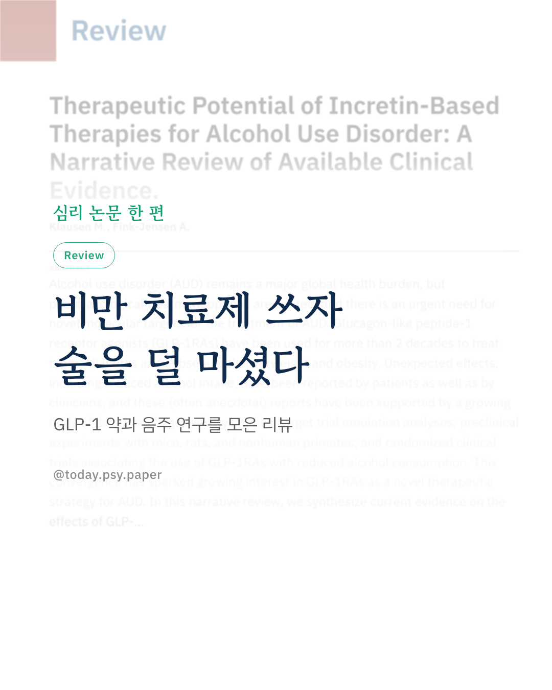
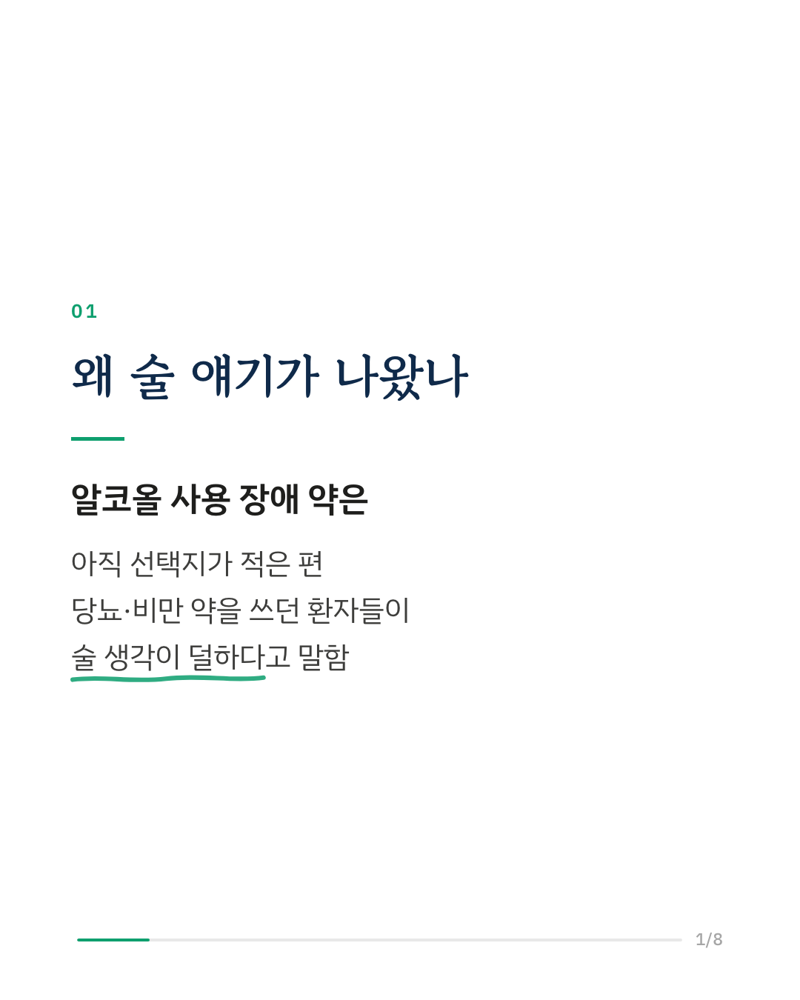
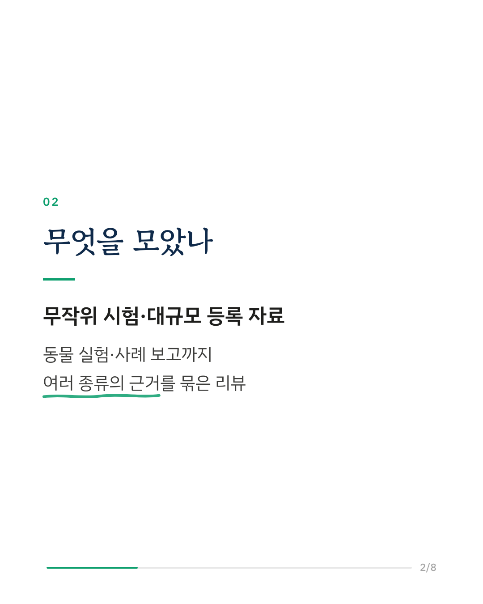
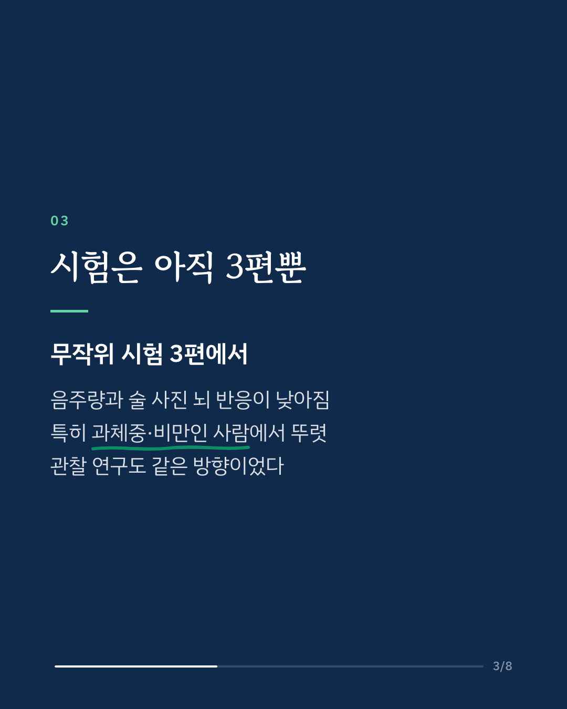
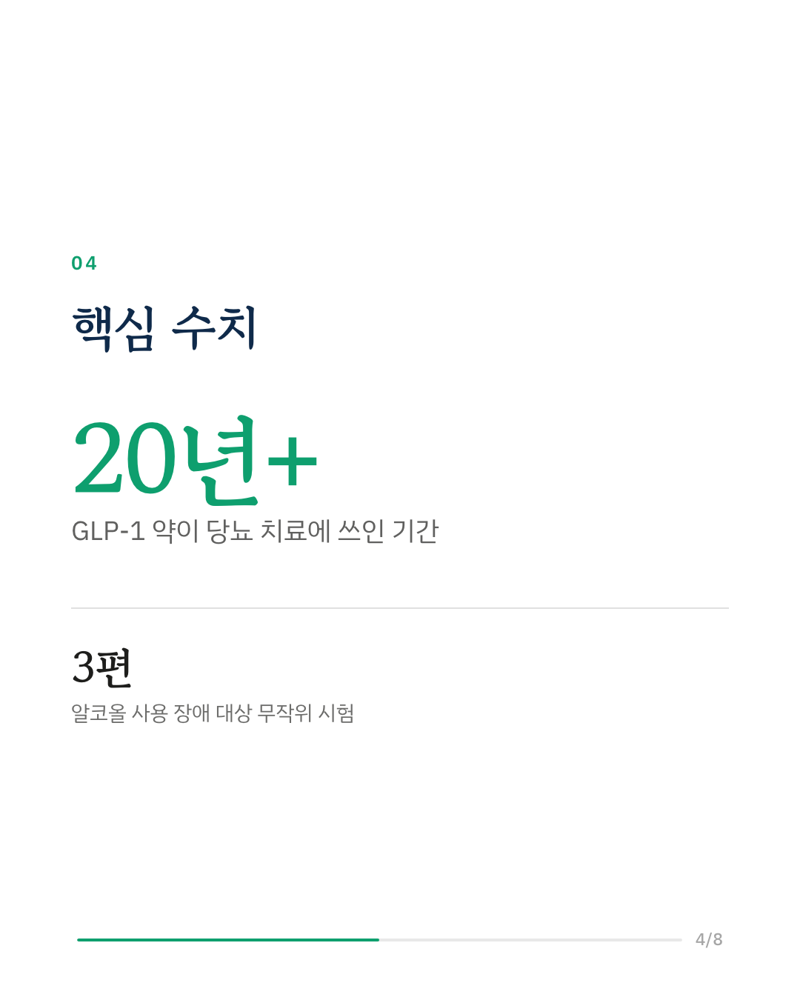
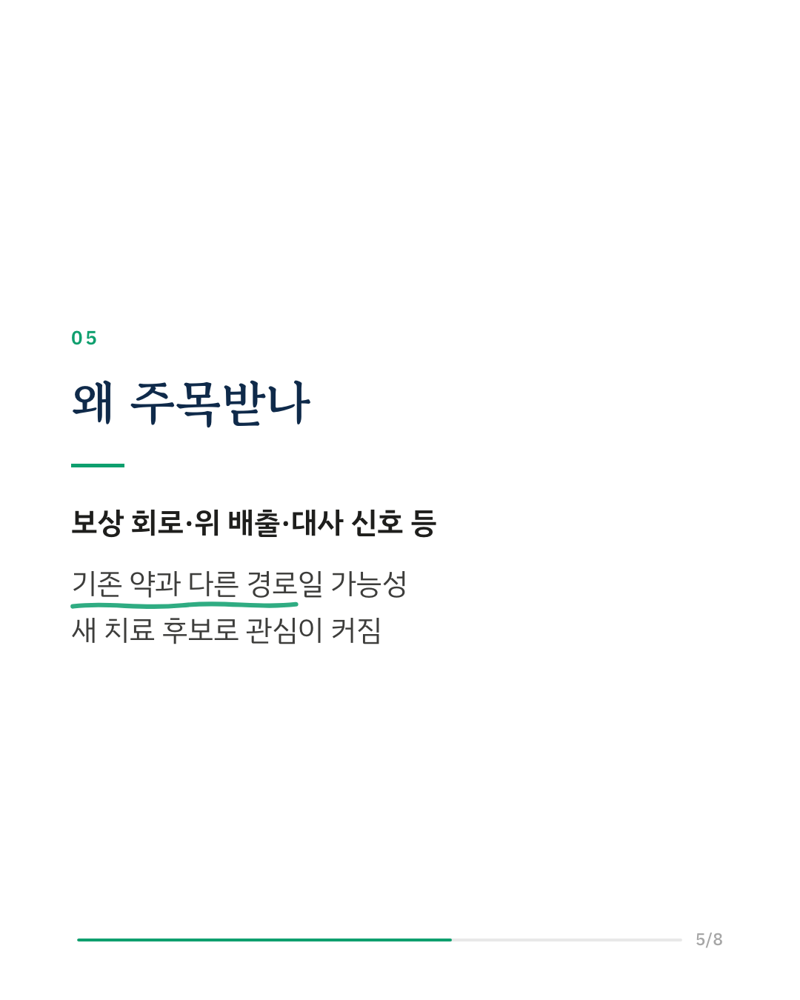
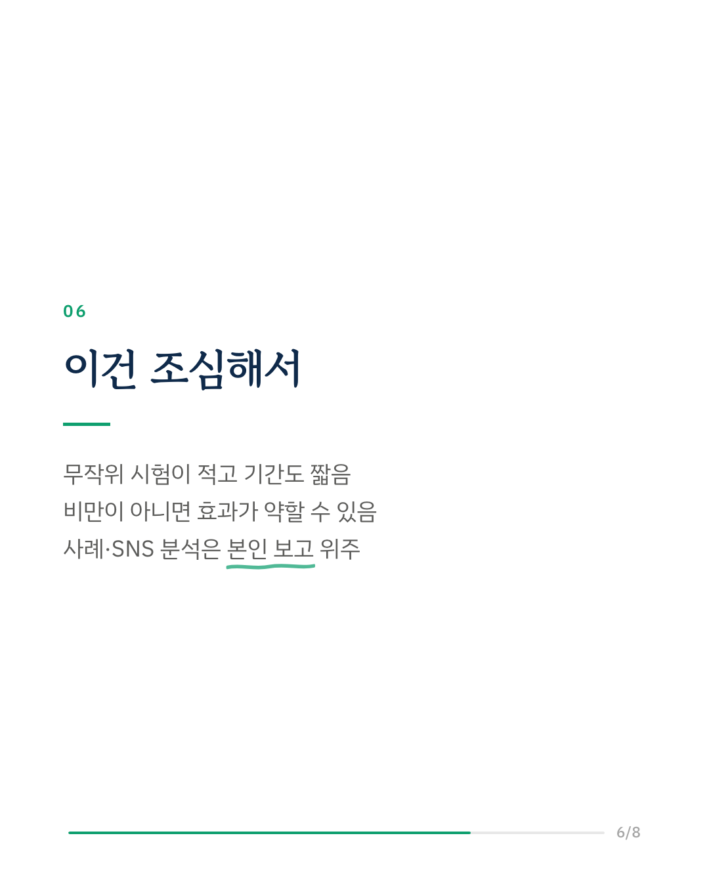
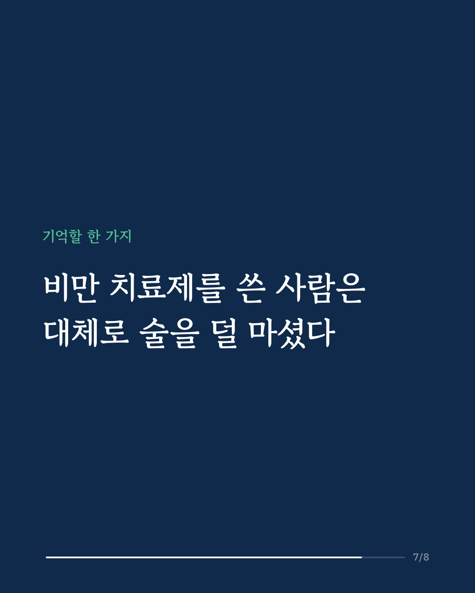
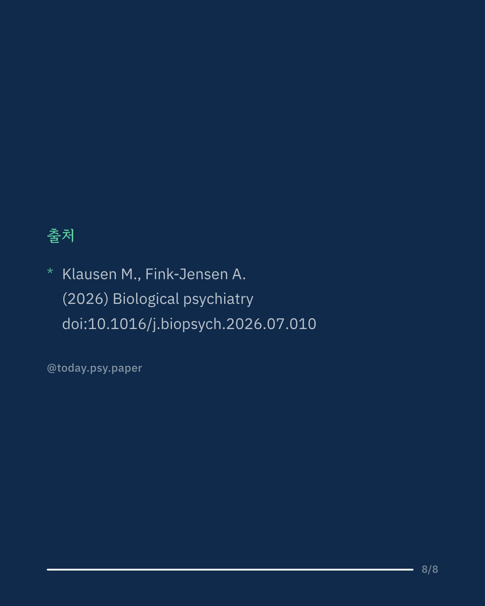

알코올 사용 장애는 흔하지만 쓸 수 있는 약은 많지 않습니다. 그런데 당뇨·비만 치료에 쓰이는 GLP-1 계열 약을 쓰던 환자들이 술 생각이 줄고 음주량이 적어졌다는 이야기가 꾸준히 나왔습니다. 이 리뷰는 그 근거를 임상시험, 대규모 등록 자료, 동물 실험, 사례 보고까지 한데 모았습니다. 알코올 사용 장애 환자를 대상으로 한 무작위 시험은 아직 3편입니다. 이 시험들에서 음주량과 술 관련 사진에 대한 뇌 반응이 낮아졌고, 특히 과체중이나 비만인 사람에게서 차이가 뚜렷했습니다. 수십만 명 규모의 관찰 연구들도 일관되게 같은 방향을 보였습니다. 연구진은 이 약이 뇌의 보상 회로, 위 배출 속도, 대사 신호 등 기존 치료제와 다른 경로로 작용할 수 있다고 봅니다. 다만 무작위 시험의 수가 적고 기간이 짧아, 비만이 아닌 사람에게도 같은 효과가 있는지는 아직 분명하지 않습니다. Biological Psychiatry (2026), 'Therapeutic Potential of Incretin-Based Therapies for Alcohol Use Disorder: A Narrative Review of Available Clinical Evidence' DOI: 10.1016/j.biopsych.2026.07.010 #임상심리 #정신건강정보 #심리학연구 #논문리뷰 #알코올사용장애 #음주 #비만치료제 #중독치료
python3 publish.py 42486217